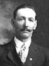
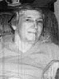

fiche familiale
*******************************************************************************
 |
Séraphine Charron décède à l'âge de 76 ans. Naissance le 7 sep 1868 à Hull Angèle, Zéraphie Décès le 2 déc 1944 à Laverlochère, cté Témiscamingue. Funérailles: 5 déc 1944 à St-Isidore de Laverlochère Sépulture: au cimetière de Laverlochère Marraine de Rolland Rivest Père: Inconnu Mère: Inconnue |
1ier époux: Françis/François Labelle
décède à l'âge de 42 ans
Dit French
Naissance: 15 sep 1863
Décès: en 1906 à Ville-Marie, cté Témiscamingue,
venu s'établir dans le rang 2 de Laverlochère en 1904.
Décède d'un accident à l'abattage d'un arbre dans un chantier à Ville-Marie.
Père: Inconnu
Mère: Inconnue
*******************************************************************************
Enfant 1 Rosanna Labelle
Naissance: 8 mai 1886 à Hull
Mariage le 6 mars 1905 à Notre-Dame-du-Rosaire de Ville-Marie
Conjoint: Napoléon Patry
Père: Olivier Patry
Mère: Phélonise Doucet
Enfant 1 Rosaire Patry
Mariage: 9 mai 1928 à Notre-Dame-de-Lourdes de Lorrainville
Conjointe: Robertine Courchesne
Père: Henri Courchesne-Brissette
Mère: Marie-Caroline McFadden
Enfant 2 Ferdinand Patry
Mariage: 3 mai 1933 à St-Isidore de Laverlochère
Conjointe: Robertine Courchesne
Père: Henri Courchesne-Brissette
Mère: Marie-Caroline McFadden
Enfant 3 Émile Patry
Mariage: 16 nov 1937 à St-Isidore de Laverlochère
Conjointe: Adrienne Patry
Père: Adélard Patry
Mère: Cécilia Brouillard
Enfant 4 Edouard Patry
Mariage: 15 nov 1941 à Notre-Dame-de-la-Protection de Rouyn-Noranda
Conjointe: Thérèse Charlebois
Père: Ovide Charlebois
Mère: Léontine Beaulé
-------------------------------------------------------------------------------
Enfant 2 Anna Labelle
Naissance: 25 mai 1888 à Hull
-------------------------------------------------------------------------------
  |
Enfant 3 Albert Labelle décède à l'âge de 84 ans. Naissance le 31 déc 1889 à Hull Décès le 13 nov 1974 au centre hospitalier de Rouyn-Noranda Mariage le 6 jul 1914 à St-Isidore de Laverlochère Conjointe: Marguerite Rivet/Rivest n. 1 mai 1894 d. 23 sep 1974 (sa famille) |
Enfant 4 Adélard Labelle
Naissance: 3 sep 1891 à Hull
-------------------------------------------------------------------------------
Enfant 5 Angéline Labelle
Naissance: 19 août 1893 à Hull
Mariage: 12 jan 1914 à St-Isidore de Laverlochère
Conjoint: Benoit Perrier
Père: Anselme Perrier
Mère: Mathilde Carrière
-------------------------------------------------------------------------------
Enfant 6 Florida Labelle
Naissance: 6 sep 1894 à Hull
-------------------------------------------------------------------------------
Enfant 7 Arthur Labelle
Naissance: 6 août 1896 à Hull
-------------------------------------------------------------------------------
Enfant 8 Théodore Labelle
Naissance: 3 juin 1899 à Hull
-------------------------------------------------------------------------------
Enfant 9 Jean-Baptiste Labelle
Naissance: en mars 1906 à Laverlochère, cté Témiscamingue
Mariage: 17 août 1932 à St-Isidore de Laverlochère
Conjointe: Alma Jetté
n. en 1911 d. en 1940
Père: Eugène Jetté
Mère: Ida Boisjoly
Enfant 1 Thérèse Labelle
Mariage: 23 juin 1956 à Immaculée-Conception de Rouyn-Noranda
Conjoint: Lionel Corbeil
Père: Joseph Corbeil
Mère: Antoinette Groulx
*******************************************************************************
Mariage: 14 octobre 1914
à St-Isidore de Laverlochère
|  |
2ème époux: Honoré Barriault décède à l'âge de 54 ans. Naissance le 18 mai 1872 à Sillery. Décès le 2 mai 1927 à Laverlochère, cté Témiscamingue. Sépulture au cimetière de Laverlochère. Occupation: Cultivateur. Parrain de Rolland Rivest. Il parlait mieux l'anglais que le français. Père: Fabien Barriault Mère: Marie-Anne Morissette (sa famille) |
|   |
Enfant 1 Gertrude Barriault décède à l'âge de 74 ans. Naissance: 6 juin 1915 à Laverlochère, cté Témiscamingue. Décès: 19 novembre 1989 à Fort Lauderdale, Florida. USA. Mariage: 27 mars 1934 à Kirkland-Lake, Ont. Conjoint: Thomas Beggs n. 27 novembre 1910 d. 5 mars 1993. (sa famille) |
| Page précédente | Début de la page |